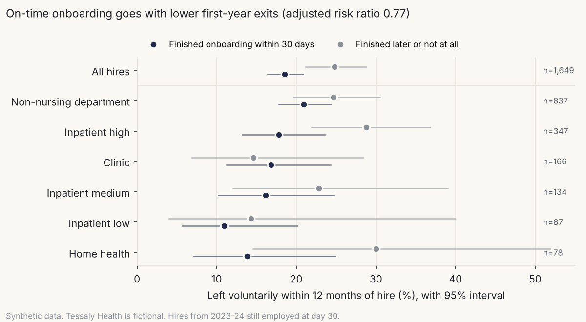
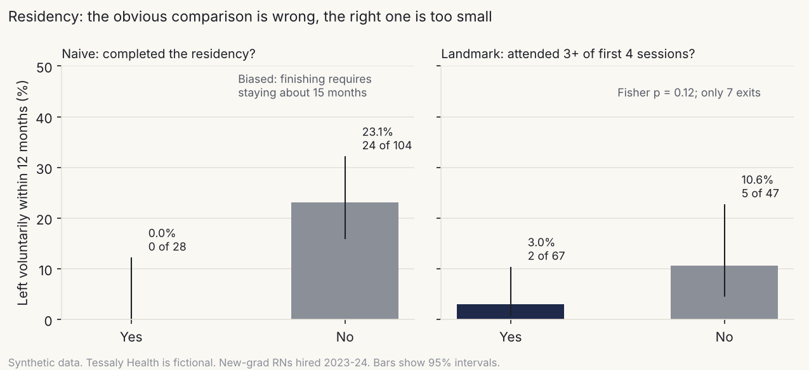

Does the training change outcomes?
Case study B · Linking training timing and attendance to first-year retention, with effect sizes and caveats
Tessaly Health is a fictional nonprofit health system. Every number on this page comes from synthetic data and shows a method, not a real result.
1. The question
Tessaly Health loses about one in four new hires in their first year. Leaders asked two things. Do people who finish role onboarding on time stay longer? And does the first-year nurse residency keep new graduates? Both answers would shape where training money goes, so both had to be right.
2. The data
From the Tessaly Health synthetic data generator (LIB-23, generator/, seed 20261108):
| Cohort | Who | n |
|---|---|---|
| Onboarding | Everyone hired in 2023–2024 and still employed on day 30 | 1,656 |
| Residency (naive) | New-graduate RNs hired 2023–2024 | 132 |
| Residency (landmark) | Those still employed at their fourth residency session | 114 |
| Time to proficiency | New grads with a proficiency record; experienced RN hires for context | 108 and 346 |
Hiring through 2024 gives everyone a full 12 months of follow-up before the data ends. On-time onboarding uses case study A’s evidence rule: a passed attempt on role onboarding within 30 days of hire. The outcome is a voluntary exit within 12 months of hire.
Limits. This is observational data. Turnover rates are tuned to national hospital surveys, but the generator plants the training effects, so recovering them tests the method, not the world. The residency sample is small because a 4,000-person system hires only about 66 new graduates a year.
3. Approach
Onboarding. Chi-square on the 2×2 table, with the risk ratio and phi as effect sizes. The likely confounder is the unit: high-turnover units are busier, so new hires there finish onboarding later and leave more. I adjusted two ways, a Mantel-Haenszel risk ratio across role and unit strata and a logistic model standardized back to a risk ratio, with a bootstrap interval. Then I ran sensitivity analyses and a negative control.
Landmark at day 30. Someone who leaves on day 20 can’t finish onboarding “on time,” so including them would make on-time onboarding look protective by construction. Everyone in the cohort was still employed on day 30.
Residency. The obvious comparison, completers against non-completers, is biased: you can only complete by staying through the program (about 15 months from hire here). So I measured exposure early instead (attended 3 or more of the first 4 sessions) among residents still employed at session 4. Fisher’s exact test, because the counts are small, plus a power calculation.
Time to proficiency. Mann-Whitney, because the days are skewed and the groups small. Rank-biserial correlation as the effect size, plus a check that censoring (people who left before reaching proficiency) wasn’t uneven.
Alternatives I considered. A Cox survival model would use exit timing as well as exit or no exit. With a fixed 12-month window and full follow-up, the risk ratio answers the same question in terms leaders read more easily. Propensity matching was the other adjustment option; with one strong categorical confounder, stratification is simpler and shows its work.
4. Validation
| Check | Result |
|---|---|
| The adjusted interval contains the effect the generator planted (answer key opened afterward) | Planted hazard ratio 0.70 implies a 12-month risk ratio of 0.73; the estimate is 0.77 (0.64–0.94). Pass |
| Adjusting for unit moves the estimate toward 1, as the planted confounding predicts | Crude 0.74, adjusted 0.77. Pass |
| Negative control: involuntary exits, where no effect was planted | 0.79 (0.40–2.13), which includes 1. Pass |
| Sensitivity analyses: day-45 landmark, excluding rehires, RNs only, any exit | All below 1 (0.62 to 0.80). Pass |
| Permutation test (5,000 shuffles) vs. the chi-square p-value | 0.004 vs. 0.003. Pass |
| Residency and proficiency estimates point the planted direction | Yes, both; neither is statistically established. Pass |
5. Findings (synthetic data)

On-time onboarding goes with fewer first-year exits. 18.4% of on-time finishers left within a year, against 24.8% of everyone else (χ² = 8.7, p = 0.003). The effect size is small per person (φ = 0.07) but matters across a workforce. Adjusted for unit and role, the risk ratio is 0.77 (95% CI 0.64–0.94): about a quarter fewer first-year exits.
The unit was confounding it, a little. High-turnover inpatient units had the lowest on-time rate (60%) and among the highest exit rates (22%). Low-turnover units: 84% and 12%. Adjusting moved the estimate from 0.74 to 0.77. The association survives, but some of the raw gap was the unit, not the training.
This study could only just see it. With these group sizes, the smallest risk ratio detectable at 80% power is 0.74. An effect much smaller than this one would have been missed, and a “no difference” result would have meant nothing.
What it doesn’t show is cause. Conscientious hires may both finish onboarding fast and stay longer. If the link were causal, moving the 488 late finishers to on time would mean roughly 28 fewer first-year exits over two years of hiring. Testing that takes a different design (see section 6).

The residency headline would have been wrong. Completers: zero first-year exits. Non-completers: 23%. That’s the number a program report would lead with, and it’s an artifact. Finishing requires staying, so leavers are non-completers by definition.
The honest comparison is too small to answer. Early attenders left at 3.0% against 10.6% (risk ratio 0.28, 95% CI 0.06–1.39, p = 0.12). The direction is encouraging and the interval is enormous. There were only 7 exits. Even if early attenders had zero exits, this sample would have only a 66% chance of showing a significant difference. Detecting a 35% reduction reliably would take about 1,800 residents per group: decades of Tessaly’s hiring.
Proficiency points the same way, but isn’t established. Early attenders reached proficiency in a median of 159 days, against 180 (Mann-Whitney p = 0.15; a randomly chosen early attender was faster 58% of the time). Censoring was even (0% vs. 2%). New graduates as a group took more than twice as long as experienced hires (168 vs. 74 days, p < 0.001), which matters for case study C.
The full chain from training to business outcomes, with the strength of each link, is in Workforce analytics metric tree: training to retention (LIB-05) (LIB-05).
6. What I’d do in practice
- Manage on-time onboarding as a leading indicator. Add day-14 and day-25 manager prompts, and report the on-time rate by unit beside first-year turnover. Present it as an association, not a guarantee.
- Test it properly. Roll the manager prompts out by unit in a staggered order, so earlier and later units can be compared over the same period. That turns an association into evidence about cause, at little cost.
- Stop reporting completer retention as residency impact. Report retention from hire for every resident, measured at fixed points (6 and 12 months), with attendance tracked as engagement.
- Pool to get power. Combine several years, or join a multi-hospital residency benchmark, before claiming a retention effect. Until then, judge the residency on proficiency, confidence and preceptor feedback, which it can move within its own cohort.
- Decide the measures before launch. Any new program gets its outcome, comparison and minimum detectable effect written down first (see LIB-17, the measurement plan).
7. Files
| File | What it is |
|---|---|
| Workforce analytics metric tree: training to retention (LIB-05) | LIB-05 metric tree: training to business outcomes, with evidence strength |
analysis/onboarding.py |
Cohort, chi-square, risk ratios, Mantel-Haenszel, adjusted model, sensitivity, power |
analysis/residency.py |
Naive and landmark residency analysis, power, Mann-Whitney on proficiency |
analysis/visuals_b.py |
Charts and metric tree |
analysis/validate_b.py |
Answer-key comparison, negative control, permutation test |
outputs/ |
Result tables, cohorts, figures, validation report |
To reproduce (after the generator and case study A’s common.py):
cd case-studies/b-training-and-outcomes/analysis
python onboarding.py && python residency.py && python visuals_b.py && python validate_b.py
All code is AI-assisted (Claude). I chose the cohorts, landmarks, confounders, tests and checks; Claude wrote the code to that design; the validation above is how I checked it.